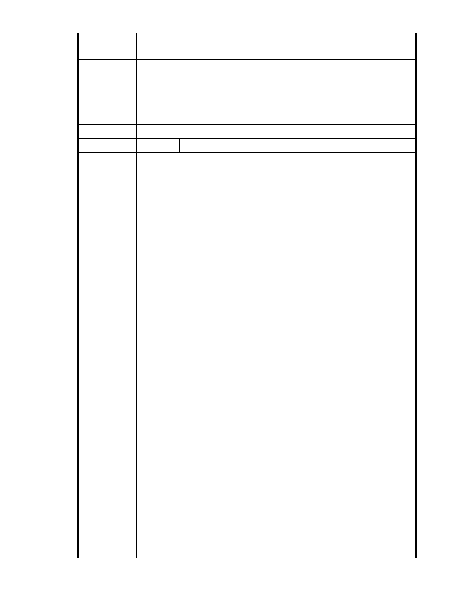

俾便閱覽。
建議辦法
一、本案申請範圍於慈濟購得前已遭填平破壞作汽車停車場使用，已長
市府說明
年不具保護區之功能；目前申請方案較先前方案已大幅降低開發強
度、調整使用項目並承諾大面積滯洪設施等回饋事項，顯示申請單
位欲改善現況之誠意。
二、相關陳情意見將納入本案審查人民意見，依法定程序公開辦理。
委 員 會 決 議 同編號 1。
編號
陳情理由
102 陳情人 黃秀敏
主旨：有關「變更臺北市內湖區成功路五段大湖公園北側部分保護區及
道路用地為社會福利特定專用區主要計畫案」暨「擬訂臺北市內
湖區成功路五段大湖公園北側社會福利特定專用區細部計畫案」
為 87 年 貴會駁回重新包裝之變更保護區案，請 貴會應就先前
駁回理由逐一審議，若有駁回理由未喪失或未改善者，應以相同
理由駁回本案變更申請。
說明：
一、依據都市計畫法第 19 條第 1 項規定辦理。
二、基於台北市保護區劃設的目的與意義、全球氣候驟變下的極端天候，
以及保護區對於台北市內湖區大湖里與本住戶的重要價值，認為水
土保持、天然資源、生態與都市排水蓄洪等功能，應優先於社會福
利設施開發使用。
三、慈濟在民國 86 年向新陸開發公司買本案土地。分別在 86 年 12 月
13 日 及 12 月 23 日 ，提出變更保護區作為醫療園區主要/細部計
畫，台北市政府在 87 年 1 月 16 日 駁回該計劃，並載明駁回理由，
惠請 貴委員會應就先前駁回理由逐一審議，若有駁回理由未喪失
或未改善者，應以相同理由駁回本案變更申請。
四、經查本案用地慈濟內湖園區(台北市內湖區大湖段 120、133、144、
145 等四筆)為山坡地溜地目(面積 31851 ㎡)保護區土地，之前於民
國 69 年由大湖遭非法填平後土質鬆軟，不適宜變更承受高強度建築
之開發。
五、前開「溜」地目土地為湖泊用地，於民國 62 年由七星水利會標售給
新陸開發公司時有但書：「開發利用不得妨礙都市排水功能」，該
用地位於山溝與湖泊交會處，水土保持功能重要，開發後將影響上
游水系排水。
六、經查本案所在地區仍然位於山溝與湖泊交會處，地質條件、山坡谷
地集水敏感地區…與排水功能等條件依然不變，加上地球暖化、氣
候異常、天災不斷…懇請 貴委員會應逐條審理先前駁回理由，若有
駁回理由未喪失或未改善者，即應以相同理由駁回本案變更申請，
以免造成大湖里、大湖山莊街或本住宅地區未來受到天然災害有淹
水之虞。
七、本人居住於台北市內湖區大湖里成功 5 段 152 巷 5 號 6F ，緊臨慈濟
內湖園區，受本案保護區變更後之負面影響最大，請貴會通知本人
列席參與本案後續所有會勘、審議、專案小組會議及大會，並請依
政府資訊公開法將會議時間、地點，以及會議資料、紀錄等相關資
- 88 -